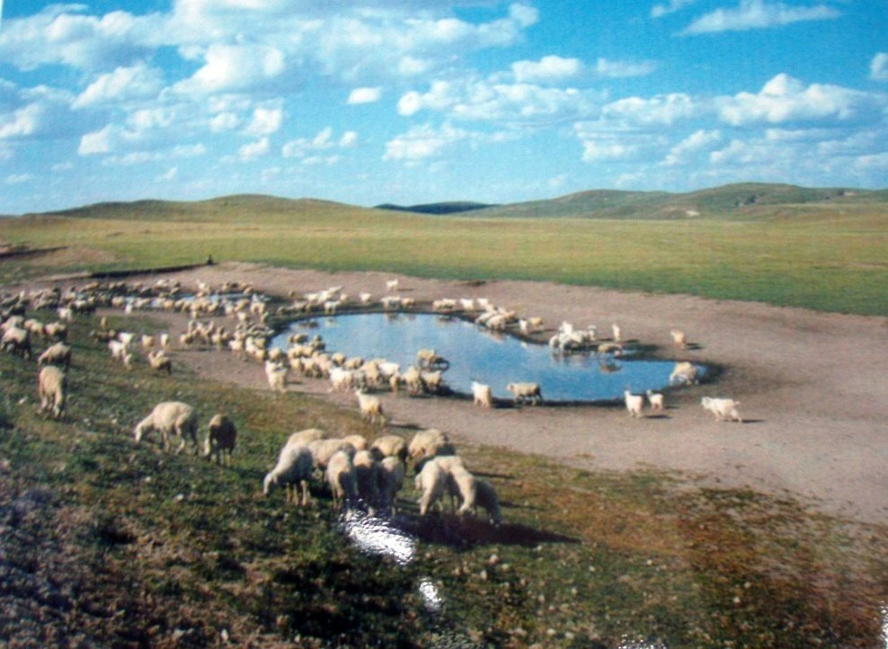
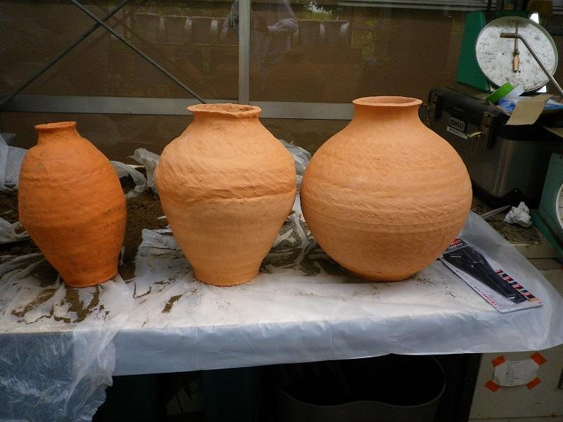
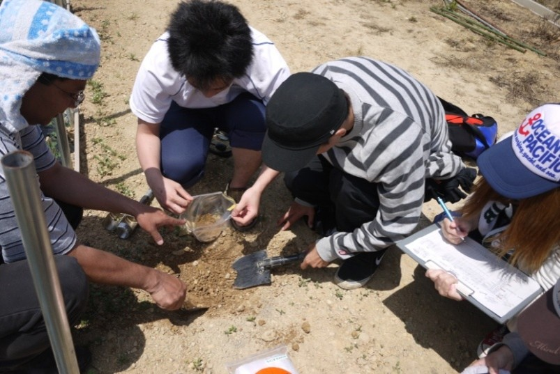
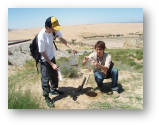

土壌侵食と農地保全
土壌侵食の機構解明と予測、水食を抑える被覆材と作物残さの再利用、植物由来の土壌凝集材、廃材を用いた沖縄の赤土の透水性改善を扱ってきた。
01 / 研究室の写真




02 / 研究の考え方
農業・農村地域の土壌、水、植物資源を対象に、まず個々の性質を調べ、生物の働きや資源・資材の組合せによって効果がどう変わるかを検証する。現地調査、実験、計測、試料分析を通じて、現場の課題と水土保全・環境修復の方法を結びつける。課題に応じて、土壌侵食の推定にUSLE・WEPP、土壌中の水分・溶質移動の解析にHYDRUSを用いる。GIS・リモートセンシングも、土地利用や流域の空間的な評価に用いてきた。対策の適用可能性は、地域で入手できる資材、維持管理、住民のニーズも踏まえて検討する。
03 / 研究課題
土壌侵食の機構解明と予測、水食を抑える被覆材と作物残さの再利用、植物由来の土壌凝集材、廃材を用いた沖縄の赤土の透水性改善を扱ってきた。
植物による汚濁水の浄化、地下水中のヒ素が土壌・水・植物に及ぼす影響、植物を利用した汚染土壌の修復、流域の水質調査を行ってきた。
壺灌漑、膜被覆、保水材の利用、土壌・水・植物の相互作用に着目した植物の水利用の調節、土壌塩類化の防止と予測を研究してきた。
土管を用いた暗渠排水、発酵促進剤による堆肥化期間の短縮、安価な資材を使った簡易型屋上緑化ユニットなどを検討してきた。
04 / 研究事例
帰化植物が持つ浄化能力を汚濁水の処理に利用できるか実験した。
素焼きの壺を用い、乾燥地農業で水を効率よく供給する方法を検討した。
作物残さを地表面の被覆材として利用し、水食による表土の流亡を抑える方法を調べた。
土壌中の水の移動と利用可能性を管理し、植物の水利用を調節する方法を検討した。
05 / 対象地域
地下水のヒ素、土壌・水・植物への影響と植物を利用した修復。
壺灌漑、膜被覆、保水材を用いた乾燥地・砂漠化関連の研究。
マングローブ林の減少や焼畑の影響が懸念される流域の水質。
GISとリモートセンシングを用いた水環境と農地保全の研究。
乾燥地の農地における土壌塩類化の空間的評価。また、インペリアル郡の農業土地利用とソルトン湖流域の塩分濃度に関する研究をAGU 2018で発表。
衛星画像による土壌流出の評価と、沖縄の赤土の透水性改善。